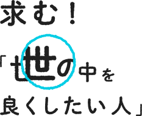
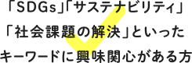
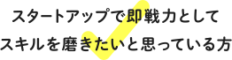
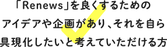
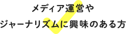
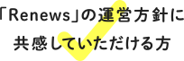

Renews（リニューズ）では、柔軟な働き方で、編集業務やウェブメディアの運営業務に協力いただけるパートナーを募集しています。以下の求める人材像にひとつでも当てはまる方、一緒に世の中を“リニュー”していきませんか？
-

自社や株主の利益を最優先とする旧来型の資本主義や市場主義が揺らいでいます。「グレートリセット」によって、企業や経済活動はすべからく社会課題や地球環境への貢献を志向すべきという価値観が世界的に広がっています。日本はこのトレンドの到来が遅れていますが、いずれ否応なく社会全体が対応せざるを得ない時代がやってくると考えています。その時を少しでも早めるために「自身も貢献したい」と思う方がいらしたら、ぜひ一緒に働いていただけると幸いです。
-

Renewsは2020年7月オープンの幼いメディア。まだ、少ない人数で運営しています。大手メディアのように分業や縦割りの体制もありません。つまり、意欲や興味があれば、なんでも即戦力として経験できます。個々の失敗は組織の経験値として価値ある資産になります。失敗を恐れず、腕を存分に試してみたいと思っている方。早期に社会人として成長し、若いうちから責任ある仕事を経験してみたいと思っている方。そうした方々にとって、やりがいのある環境だと考えています。
-
具現化したいと考えていただける方">
Renewsには固定化された業務プロセスはありません。朝令暮改を厭わず、日々アップデートしていく方針です。また、現状はまだ、お金をいただく顧客が存在するわけでもありません。つまり、自ら考えたアイデアや企画をどんどんと実行できる環境にあります。
-

Renewsは新しい時代の新しいウェブメディアとして、かつてないことにどんどんと挑戦していきます。かつての方法ややり方の良いところは取り入れますが、時代に合わないものは変えていきます。これから成長する過程をともに楽しんでいただけるような方を求めています。ジャーナリズムに王道はありません。誰もが情報収集・発信できるようになり、その方法論や定義も揺らいでいます。改善・改良の余地が多いからこそ、こだわりをもって仕事をする価値が高い領域だと考えています。
-

Renewsは、“ソーシャルグッド”かつ課題解決に特化したウェブメディアとして2020年7月にオープンしました。新型コロナウイルスを筆頭に、課題や不安で満ち溢れているからこそ、世の中や社会が少しでも良くなることに寄与できるようなコンテンツ発信にフォーカスしています。とはいえ、まだ緒に就いたばかり。経験やスキルよりも、趣旨に共感いただけける方を重視しています。
もっと深く「Renews」のことを知りたい方はこちら
編集で世の中を変える
編集パートナー（業務委託）を募集します。
主な業務内容は、Renewsのコンテンツ全般の企画・編集・制作です。世の中や社会を良くすることにつながる企画をたて、アイデアや提言を発信するRenewsの書き手「リニュアー」を発掘・サポートし、コンテンツとして制作していただきます。
制作業務には、原稿編集のほか、CMS（記事投稿システム）への投稿や校閲も含まれます。カメラマン、写真／イラスト／バナー画像などの手配は、担当者と調整しながら進めていただきます。
こんな人を求めています
- Renewsの「求める人材像」に
共感いただける方。 - メディア企業や各種編集部での
編集実務経験がある。 - 企画立案や取材先の新規開拓を
得意としている。
報酬について
委託料は月額10〜30万円程度を想定。
経験スキルや稼働時間、どれだけコミットメントしていただけるかによって変動します。なるべくご希望に沿いますので、お気軽にご相談ください。
勤務地について
勤務地はご自宅、もしくはご自宅近辺のワークスペースなど、
個々人の環境やご都合に合わせて柔軟に設定していただきます。
勤務時間について
勤務時間の設定は設けておりません。
相談のうえ、個々人の希望や事情を尊重し、柔軟に対応します。
事業の成長を楽しむ
事業戦略パートナー（業務委託）を若干名、募集します。
主な業務内容は、Renewsというウェブメディア運営、あるいは、株式会社リニューズの経営全般に関するアドバイス・サポート・実務になります（編集業務・エンジニアリング以外）。メディアを健全に成長させていくためのあらゆる機能を補完いただくことが目的です。
SEOやマーケティング、デザインに関するパートナーがおりますが、今後は、収益化（マネタイズ）や財務などの機能も重要になってきます。レベニューシェアや合流も視野に入れながら、柔軟に検討させてください。
こんな人を求めています
- Renewsの「求める人材像」に
共感いただける方。 - ウェブメディアの運営実務（編集以外）に
携わったことがある。
報酬について
委託料は月額10〜30万円程度を想定。
経験スキルや稼働時間、どれだけコミットメントしていただけるかによって変動します。
なるべくご希望に沿いますので、お気軽にご相談ください。
勤務地について
勤務地はご自宅、もしくはご自宅近辺のワークスペースなど、
個々人の環境やご都合に合わせて柔軟に設定していただきます。
もちろん、東京・世田谷区のオフィスもご利用いただけます。
勤務時間について
勤務時間の設定は設けておりません。相談のうえ、個々人の希望や事情を尊重し、柔軟に対応します。
個人事業主のほか、副業・兼業も歓迎しますが、社員規則等に留意してご応募ください。
自身の代表作として
育てる
Webエンジニア／サーバーサイドエンジニア
（業務委託）を募集します。
主な業務内容は、Renewsのウェブサイト（フロント）や、CMS（サーバー）の開発・更新・保守・運用です。
2021年中には様々な機能を追加した、大規模なリニューアルも予定しております。ご自身の「代表作」として、一緒にRenewsというサイトを育てていただけると幸いです。
こんな人を求めています
- Renewsの「求める人材像」に
共感いただける方。 - ウェブメディアの構築や運用の実務に
携わったことがある。 - フロントサイド（デザイン、HTML、CSS、PHP）の対応ができる方。
または、サーバーサイド（PHP、Wordpress）の対応ができ、CMSにお詳しい方。
（フロント／サーバーの両面でご対応可能であればベストです） - クライアント業務ではなく、事業会社におけるCTOを志向する方。
報酬について
委託料は月額20〜60万円程度を想定。
経験スキルや稼働時間、どれだけコミットメントしていただけるかによって変動します。
なるべくご希望に沿いますので、お気軽にご相談ください。
勤務地について
勤務地はご自宅、もしくはご自宅近辺のワークスペースなど、
個々人の環境やご都合に合わせて柔軟に設定していただきます。
もちろん、東京・世田谷区のオフィスもご利用いただけます。
勤務時間について
勤務時間の設定は設けておりません。相談のうえ、個々人の希望や事情を尊重し、柔軟に対応します。
個人事業主のほか、副業・兼業も歓迎しますが、社員規則等に留意してご応募ください。
「SDGs」「メディア」「スタートアップ」に
ピンと来た学生さん大募集！
大学生インターン（アルバイト）を、メディア運営全般を対象にフリーエントリーで募集します。
ご本人とのインタビューで、何ができるか、何に貢献できるかを話し合い、適切な業務とマッチングします。何でも挑戦してみたい方、社会での実務経験を通じて成長したい方に、適切な成長戦略を提示させていただきます。
経験は問いません。「編集アシスタントとして取材についていきたい！」「簡単な記事を制作してみたい！」「動画の撮影・編集が好き」「スタートアップの雰囲気を味わってみたい」……など、理由はなんでもOKです！
編集の実務に関しては、大手メディアでキャリアを積んだプロが、イチからお教えします。
編集や記事執筆の基本的なスキルは、ポイントを押さえ、実践や経験を積めば、比較的早期に獲得可能です。さほどハードルが高いものではありません。
興味をもってもらえたら、まずはざっくばらんにお話できればと思います。
私たちと一緒に世の中を変えていきましょう！
こんな人を求めています
- メディア運営やジャーナリズムに興味のある方。
（取材・編集・撮影・執筆等の業務にかかわりたい方） - スタートアップの雰囲気を覗いてみたいと思っている方。
- 若いうちから経験を積み、早期に社会人として成長したいと考えている方。
報酬について
時給2000円〜（週3時間〜）
出社時や取材動向時など、移動をともなう際の交通費は別途支給します。
新型コロナウイルスの感染動向に十分に留意します。
勤務地について
勤務地はご自宅、もしくはご自宅近辺のワークスペースなど、
個々人の環境やご都合に合わせて柔軟に設定していただきます。
もちろん、東京・世田谷区のオフィスもご利用いただけます。
勤務時間について
勤務時間の設定は設けておりません。相談のうえ、個々人の希望や事情を尊重し、柔軟に対応します。
編集で世の中を変える
編集者（正社員）を若干名、募集します。
主な業務内容は、Renewsのコンテンツ全般の企画・編集・制作です。世の中や社会を良くすることにつながる企画をたて、アイデアや提言を発信するRenewsの書き手「リニュアー」を発掘・サポートし、コンテンツとして制作していただきます。
制作業務には、原稿編集のほか、CMS（記事投稿システム）への投稿や校閲も含まれます。カメラマン、写真／イラスト／バナー画像などの手配は、担当者と調整しながら進めていただきます。
こんな人を求めています
- Renewsの「求める人材像」に合致する方
- メディア企業や各種編集部での編集実務経験が2年以上ある
- 長文のストーリー記事（5000〜1万文字）の制作経験がある
- 企画立案や取材先の新規開拓を得意としている
報酬について
月額50万円〜
前年度の年収にもとづき相談させてください
勤務地について
勤務地は世田谷区の本社オフィスかご自宅、もしくはご自宅近辺のワークスペースなど、
個々人の環境やご都合に合わせて柔軟に設定していただきます。
勤務時間について
勤務時間は平日の10〜19時（休憩1時間、8時間労働）を基本としますが、
相談のうえ、個々人の希望や事情を尊重し、柔軟に対応します。
勤務時間はご本人の都合に合わせて柔軟に設定します。お気軽にご相談ください。
Renewsでは、良質なコンテンツを生み出すために十分な委託料や経費提供します。「世の中に良いこと」をするからには、それなりの見返りがあるべきです。
勤務地はご自宅、もしくはご自宅近辺のワークスペースなど、個々人の環境やご都合に合わせて柔軟に設定していただきます。もちろんオフィス（東京都世田谷区三軒茶屋）もご利用いただけます。
週休2日制（土日）、祝日
年末年始、夏季休暇、年次有給休暇（10～20日）、慶弔休暇、産休・育児・介護